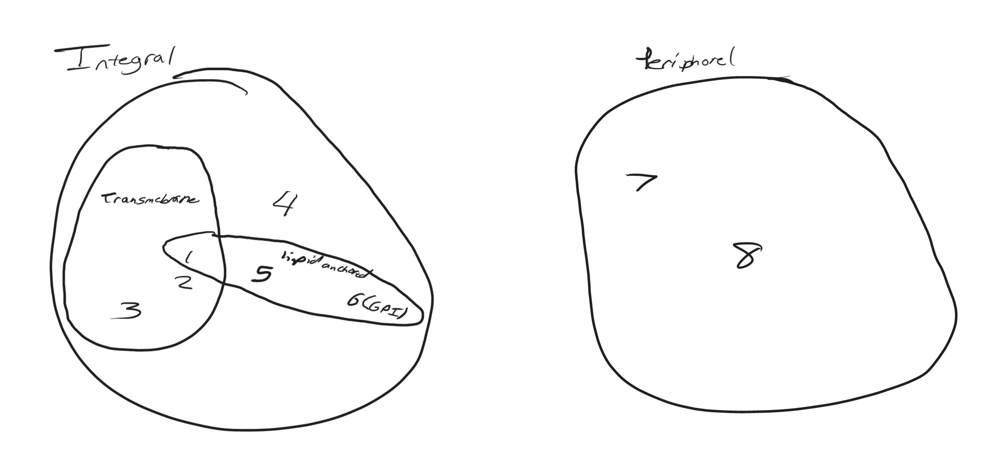
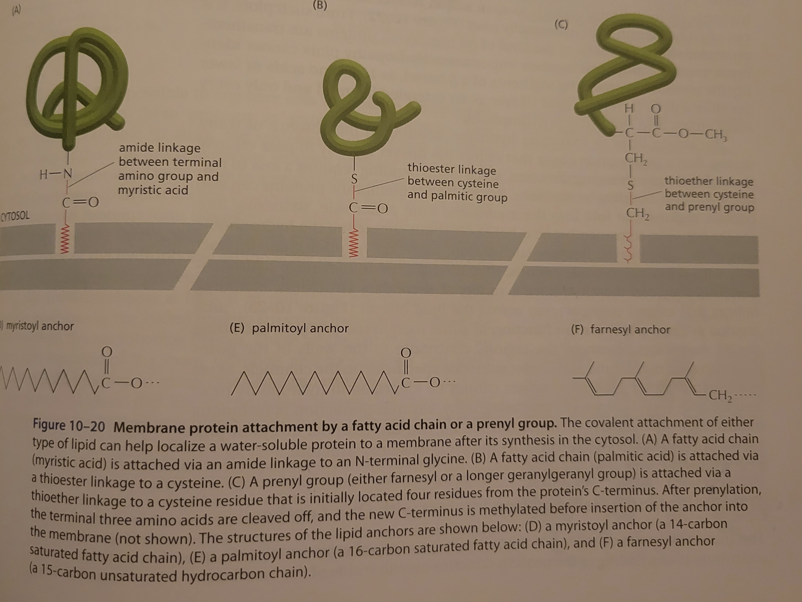

Lesson 6: Membrane Proteins
Membrane Proteins
On average 50% of the mass of a membrane is proteins. For every protein there are many more lipids. For a membrane with 50% protein mass there are approximately 50 lipids for each protein.
Membrane proteins can be associated…

In the above figure, example 1 displays a transmembrane protein that is amphiphilic, having a hydrophobic and hydrophilic end, that is covalently attached to a fatty acids which inserts into the cytosolic leaf of the bilayer increasing the hydrophbicity of the protein. This protein has a single \(\alpha\) helix that extends across the bilayer. Example 2 is a transmembrane protein that is inserted into the membrane with three \(\alpha\) helices spanning the membrane. Example 3 is yet another transmembrane protein that spans the bilayer with a rolled up \(\beta\) sheet called a \(\beta\) barrel. Example 4 shows a membrane protein with a single amphiphilic \(\alpha\) helix exposed on the surface attaching it to the cytosolic leaf. Example 5 is a soluable protein made in the cytosol that are covalently attached to a fatty acid chain that anchores them to the cytosolic leaf. Example 6 is a protein that is made as a single-pass transmembrane protein in the ER with a GPI anchor attaching it to the bilayer. Examples 7 & 8 are proteins that do not associated directly with the bilayer (known as peripheral membrane proteins) but rather have noncovalent interactions with other proteins (known as integral membrane proteins).

Peripheral proteins can be released from their associated integral proteins by exposure to very high or very low ionic solutions or solutions of extreme pH.

Many membrane proteins are glycosylated
Many membrane proteins are glycosylated, meaning a sugar residue is added to them in the lumen of the ER or Golgi apparatus. Because of this, the oligosaccharide chains are always on the noncytosolic side of the membrane.